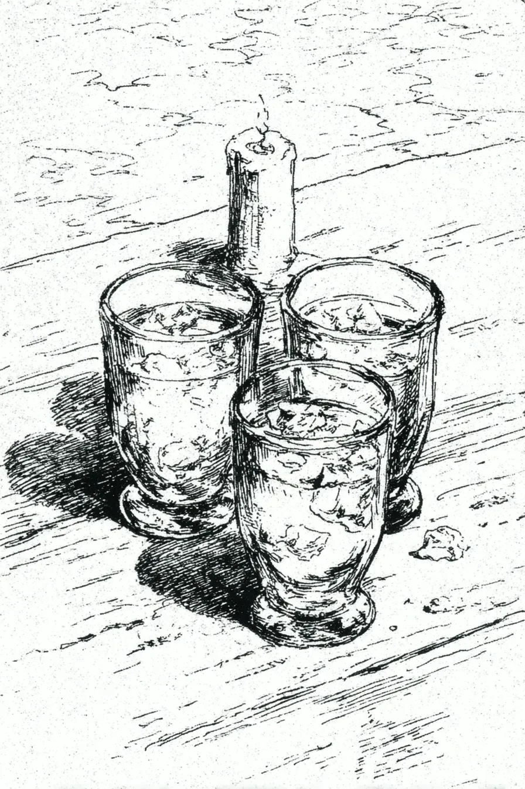

맴맴 울어대던 매미 소리가 멎었다. 그 자리를 채운 것은 소리의 부재가 아닌, 그 자체로 존재감을 지닌 침묵이었다. 피부에 내려앉는 빽빽하고 축축한 무게감 같은. 내려앉은 현관에서 시트로넬라 초 하나가 어둠에 맞서 흔들리는 불빛을 내어주고 있었고, 톡 쏘는 화학적인 향은 허술한 방패막이가 되어주었다. 불꽃이 떨리며 익숙한 것들을 낯설게 빚어냈다. 세 개의 잔에서 얼음이 움직였다. 손가락 마디를 꺾는 듯한 소리였다.
[The static of the cicadas had cut out. In its place fell a silence that wasn’t an absence of sound, but a presence—a dense, humid weight on the skin. On the sagging porch, a single citronella candle offered up its wavering light against the dark, its chemical-sharp scent a flimsy shield. The flame trembled, recasting the familiar into the strange. Ice shifted in three glasses, a sound like cracking knuckles.]
“...하지만 유령 같은 건 아냐. 귀신 들린 것도 아니고.” 셰리는 낡은 나무 테이블 위 물기로 동그라미를 그리며 말했다. “그것보단 약했지만... 동시에 더 강렬했어.”
[“…but not like a ghost. Not a haunting,” Cherie was saying, her finger tracing a wet circle on the old wooden table. “It was less than that. And more.”]
데런이 잔에 담긴 버번을 휘젓자 호박색 액체가 불빛을 머금었다. “약하고 강렬하다라. 추상적으로 말하네. 현실감 있게 설명해 봐.” 그는 잔 가장자리로 녹은 얼음 조각을 툭 건드렸다. 술잔 속 혼돈에 질서를 부여하려는 듯한, 작고 의도적인 몸짓이었다.
[Derren swirled the bourbon in his glass, the amber catching the light. “Less and more. You’re speaking in abstractions. Ground it for me.” He nudged a melted ice cube with the rim of his glass, a small, deliberate act of imposing order on the chaos in his drink.]
“저 사람은 내 말 뜻 알 거야.” 셰리가 세 번째 인물을 향해 고갯짓하며 입가에 옅은 미소를 띠었다.
[“He knows what I mean,” Cherie said, a slight smile touching her lips as she nodded towards the third figure.]
뒤뜰의 더 깊은 어둠을 배경으로 실루엣처럼 기대앉아 있던 레이가 눈을 떴다. “알아,” 그가 말했다. 그의 목소리는 마룻바닥을 울리는 듯한 저음이었다. “그건 글리치야. 세상이라는 트랙이 한 번 튀는 거지.”
[Ray, who had been leaning back, a silhouette against the deeper darkness of the yard, opened his eyes. “I do,” he said. His voice was low, a frequency that seemed to vibrate in the floorboards. “It’s a glitch. A skip in the track of the world.”]
“바로 그거야!” 셰리가 날카롭게 ‘딱’ 소리를 냈다. “글리치. 세상이 잠시 버벅거리고, 그걸 느끼는 건 오직 자기 자신뿐인 거.”
[“Exactly!” Cherie made a sharp click with her tongue and nail. “A glitch. The world stutters for a second and you’re the only one who feels it.”]
“예시를 하나 들어봐.” 데런이 촛불 쪽으로 몸을 기울이며 재촉했다. “구체적이고, 현실적인 예시 말이야... 글리치라는 것의.” 그는 ‘글리치’라는 단어를 조심스럽게, 아이러니한 거리감을 두고 발음했다.
[“Give me an example,” Derren insisted, leaning forward into the candlelight. “A concrete, real-world example of a… glitch.” He pronounced the word with careful, ironic distance.]
레이는 한동안 말이 없었다. 최면을 거는 듯한 촛불의 춤사위에 시선을 고정한 채였다. “일곱 살 때였어.” 그의 목소리는 섬세한 기억의 실타래를 풀어내는 듯했다. “조부모님 댁이었지. 앞마당에 떡갈나무가 한 그루 있었는데, 진짜 괴물 같은 놈이었어. 나보다 굵은 가지들을 뻗고 있었지.” 그는 천천히 술을 한 모금 마셨다. 다른 이들은 기다렸다.
[Ray was quiet for a long moment, his gaze fixed on the candle’s hypnotic dance. “I was seven,” he began, his voice unspooling a delicate thread of memory. “At my grandparents’ old house. There was an oak in the front yard, a genuine monster, with branches thicker than I was.” He took a slow sip of his drink. The others waited.]
“여름 뇌우가 몰려오고 있었어. 하늘을 초록빛으로 멍들게 하는 그런 종류의 폭풍우. 엄마는 안으로 들어오라고 소리치셨지만, 내 시선은 나무줄기를 기어오르는 개미 행렬에 고정되어 있었지. 나무껍질에 손바닥을 착 붙이고 그 지형을 느꼈어. 오래된 가죽처럼 거친 골이 파인 풍경, 다가오는 폭풍 때문에 차갑고 축축했지. 아직 빗방울이 한 방울도 떨어지기 전인데, 공기 중에서는 오존과 흙냄새가 났어.”
[“A summer thunderstorm was rolling in, the kind that bruises the sky green. My mom was calling me inside, but I was fixated on a line of ants marching up the trunk. I flattened my palm against the bark, feeling its topography—a landscape of furrows, rough as old leather, cool and damp from the coming storm. The air smelled of ozone and petrichor before the first drop had even fallen.”]
그는 잠시 말을 멈췄다. 눈의 초점이 흐려졌다. “바로 그때였어. 생각 같은 게 아니었어. 내 머릿속에서 울리는 목소리도 아니었고. 그건 명령이었어. 손바닥 아래의 나무만큼이나 단단한, 온몸으로 느껴지는 확신. 느낌은 이랬어. ‘세 걸음 뒤로 물러서라.’ 한 걸음도, 네 걸음도 아닌, 딱 세 걸음. 지극히 구체적이었지. 의심하지 않았어. 그 지시는 너무나도 이질적이고 절대적이어서, 그냥 따를 수밖에 없었어. 나는 정확히 세 걸음을 뒤로 내디뎠고, 세 번째 걸음에 뒤꿈치가 축축한 잔디에 박혔어.”
[He paused, his eyes unfocused. “Then it happened. Not a thought, not a voice from my own head. It was a command, a full-body certainty as solid as the tree under my hand. The feeling was: move back three steps. Not one, not four. Three. Utterly specific. I didn’t question it. The instruction was so alien and absolute that I just obeyed. I took three precise, backward steps, my heel sinking into the damp lawn on the third.”]
“뒤꿈치가 잔디에 닿는 순간, 세상이 찢어졌어. 소리가 났어. 천둥이 아니었어. 머리 바로 위에서 나무와 뼈가 부서지는 듯한 파열음. 나뭇가지는 떨어진 게 아니었어. 폭발했지. 그 충격이 발바닥을 타고 온몸으로 전해졌어. 내 손이 있던 바로 그 자리에 떨어졌어. 그대로 있었으면... 흔적도 없이 사라졌을 거야.”
[“The instant my heel touched lawn, the world tore. A sound. Not thunder. A percussive crack of wood and bone, right over my head. The branch didn’t fall; it detonated on the ground in a concussion of force that vibrated up through the soles of my feet. It landed precisely where my hand had been. It would have obliterated me.”]
현관 위로 이전보다 더 무거운, 깊은 정적이 내려앉았다.
[A profound quiet settled over the porch, heavier than before.]
“레이...” 셰리가 숨을 내뱉듯 말했다. “그런 얘기는 한 번도 안 해줬잖아.”
[“Ray,” Cherie breathed. “You never told me that.”]
“뭘 더 말할 게 있겠어?” 그가 어깨를 살짝 으쓱하며 대답했다. “부모님은 설명이 있으셨지. 속이 썩었다거나, 돌풍이 불었다거나. 가장 중요한 부분만 빼고 모든 것에 대한 설명 말이야.”
[“What is there to say?” he replied with a slight shrug. “My parents had an explanation. An internal rot, a gust of wind. An explanation for everything except the part that matters.”]
“세 걸음.” 데런이 자기 잔을 들여다보며 중얼거렸다. 머릿속에서 생각을 굴리는 소리가 들리는 듯했다. “무의식적인 청각 신호였을 거야. 나무가 삐걱거리는 소리를 들었던 게 분명해.”
[“The three steps,” Derren murmured, staring into his glass. His mind was audibly working, turning the problem over and over. “A subconscious auditory cue. You must have heard the wood groaning.”]
“아무 소리도 없었어.” 레이가 사실을 전달하듯 단조로운 어조로 말했다. “공기는 죽은 듯이 고요했고, 경고는 그 어디서 온 것도 아니었어. 마치 신호등이 초록불에서 빨간불로 바뀌는 것처럼, 아무런 감정이 담겨있지 않았지. 그 일은 일어났고, 나를 살렸고, 다시는 일어나지 않았어.”
[“There was no sound,” Ray said, his tone flat, a simple presentation of fact. “The air was dead still. The warning came from nowhere. As impersonal as a traffic light changing from green to red. It happened, it saved me, and it never happened again.”]
셰리가 등나무 의자 위로 발을 끌어당겨 앉았다. “고양이 같네.” 그녀가 나지막이 말했다.
[Cherie tucked her feet onto the wicker chair. “It’s like the cat,” she said softly.]
“고양이?” 데런이 물었다. 새로운 화제로 넘어가는 것에 안도하는 기색이었다.
[“The cat?” Derren asked, seeming relieved to be on a new topic.]
“할머니의 로켓 목걸이.” 그녀가 말했다. “작은 은색 하트 모양. 할머니가 돌아가신 뒤에, 아파트를 정리하다가 그게 사라졌어. 사방을 다 뒤졌지. 그냥... 사라져 버렸어. 집을 발칵 뒤집어 놓은 뒤에야, 우리는 무슨 일이 있었는지 짐작하게 됐어. 서두르다가, 분류하려고 놔뒀던 작은 장신구 상자를 실수로 자선 가게에 보낼 가방에 넣어버린 거야. 엄마는 슬픔에 잠겨서, 다시 확인도 안 하고 그 가방들을 그냥 가져다주셨고. 우리는 영영 잃어버렸다고 받아들였지.”
[“My grandmother’s locket,” she said. “The little silver heart. After she died, it vanished while we were cleaning out her apartment. We searched everywhere. It was just… gone. After we’d turned the place upside down, we figured what must have happened. In our haste, a small box of trinkets meant for sorting was accidentally put in a bag for the charity shop. My mom, in her grief, just dropped the bags off without double-checking. We accepted it was lost forever.”]
그녀는 어둠 속을 내다보았다. “몇 주 뒤에, 속이 텅 빈 채로 집에 걸어가고 있었어. 그때 고양이 한 마리가 나타났어. 너덜너덜한 몰골에, 마멀레이드 같은 주황색 털, 그리고 찢어져서 삐죽 솟은 귀를 한 녀석이었지. 그 녀석은 섬뜩할 정도로 나를 빤히 뜯어보더니, 몸을 돌려 골목길로 스며들었어. 나는 따라갔어. 선택의 여지가 없는 느낌이었어. 자석에 이끌리는 것 같은 강제적인 느낌. 마치 그 녀석이 내 흉골에 보이지 않는 낚싯줄을 걸어서, 부드럽지만 단호하게, 나를 끌고 가는 것 같았지.”
[She looked out into the darkness. “Weeks later, I was walking home, hollowed out. And this scrap of a cat appeared, marmalade orange with a torn, cantilevered ear. It gave me a look of unnerving appraisal, then turned and threaded its way down an alley. I followed. The feeling wasn’t one of choice, but of magnetic compulsion, as if it had hooked an invisible line to my sternum and was gently, insistently, towing me along.”]
“셰리...” 데런이 조심스러운 목소리로 운을 뗐다.
[“Cherie…” Derren began, a note of caution in his voice.]
“알아. 그 녀석은 나를 원래 가던 길에서 두 블록 떨어진 고물상으로 이끌었어. 늘 그 자리에 있었지만 아무도 들어가는 걸 본 적 없는 그런 가게. 고양이는 문 옆에 앉아, 가슴팍에 앞발을 집어넣고는 세수를 하기 시작했어. 나를 기다리고 있었던 거야.”
[“I know. It led me two blocks off my route to a junk shop, the kind of place that’s always been there but you’ve never seen anyone enter. The cat sat by the door, tucked its paws beneath its chest, and began to wash its face. It was waiting for me.”]
“그리고 넌 들어갔고.” 레이가 말했다. 목소리에 다 안다는 듯한 미소가 묻어 있었다.
[“And you went in,” Ray said, a knowing smile in his voice.]
“들어갔지. 가게 안은 녹과 삭은 종이 냄새로 가득했어. 그러다 한쪽 구석으로 이끌리는 느낌을 받았는데, 커다란 유리그릇에 값싼 모조 장신구들이 담겨 있었어. 그냥 잡동사니였지. 아무 생각 없이 그 안에 손을 푹 집어넣었는데, 손가락이 차갑고 묵직하면서도, 믿을 수 없을 만큼 익숙한 무언가를 감싸 쥐었어.” 그녀는 잠시 말을 멈췄다. “로켓이었어. 플라스틱 구슬 더미 속에서. 관절이 아릴 정도로 꽉 쥔 채 밖으로 나왔을 때, 고양이는 사라지고 없었어.”
[“I went in. The place smelled of rust and decaying paper. I felt this pull toward a corner where a big glass bowl was filled with cheap costume jewelry. Just junk. Without thinking, I plunged my hand in, and my fingers closed around something cold, heavy, and impossibly familiar.” She paused. “It was the locket. Sitting there in a sea of plastic beads. When I walked outside, clutching it with a pressure that ached in my joints, the cat was gone.”]
“우연의 사슬이 너무 길어.” 데런이 그들에게라기보다 혼잣말처럼 말했다. “기부한 것, 가게에서 그걸 사들인 것, 네가 그 앞을 지나간 것까지는... 하지만 고양이라니...” 그는 고개를 저었다. 그 부분을 담아둘 상자를 찾지 못하겠다는 듯이.
[“The chain of coincidence is too long,” Derren said, more to himself than to them. “The donation, the shop buying the lot, you walking by… but the cat…” He shook his head, unable to find a box to put that part in.]
“너도 있잖아.” 레이가 데런에게 시선을 고정하며 말했다. “네가 우리 이야기를 해체하려는 방식은, 마치 거울을 보고 논쟁하는 사람 같아.”
[“You’ve got one,” Ray said, his eyes on Derren. “The way you’re trying to dismantle ours is the way a man argues with a mirror.”]
데런은 오랫동안 침묵했다. 촛농이 초의 옆면을 따라 느릿하고 가차 없이 흘러내리는 것을 지켜보며. “내 건 이야기가 아니야.” 마침내 그가 낮은 목소리로 말했다. “통계적 변칙이었어. 기이한 연쇄 오류였지.”
[Derren was silent for a long time, watching the slow, inexorable descent of wax down the side of the candle. “Mine isn’t a story,” he finally said, his voice low. “It was a statistical anomaly. A freak cascading error.”]
“말해봐.” 셰리가 재촉했다.
[“Tell it,” Cherie urged.]
그는 깊은 한숨을 내쉬었다. “대학교 1학년 때였어. 난 지독하게 가난했지. 가방에서 구겨진 1달러짜리 지폐 한 장을 발견하고는, 자판기에서 파는 땅콩버터 크래커 한 봉지에 전부 쏟아붓기로 결심했어. 순수하고도 처량한, 절박함의 행동이었지.” 그는 씁쓸하고 괴로운 미소를 지으며 두 사람을 바라보았다. “B-4 버튼을 눌렀어. 나선형 고리가 돌아가고, 과자가 떨어졌지. 그리고 그때, 자판기가 규칙을 어기기 시작했어.”
[He let out a heavy sigh. “Freshman year. I was profoundly broke. I found a single, crumpled dollar bill in my bag and decided to blow it all on a pack of peanut butter crackers from a vending machine. An act of pure, pathetic desperation.” He looked at them, a wry, pained smile on his face. “I pressed B-4. The spiral turned, the crackers dropped. And then the machine began to break the rules.”]
그의 목소리는 점점 더 작아졌다. 그때의 경이로움을 회상하는 듯했다. “그냥 인심이 후한 정도가 아니었어. 그건 잘못된 거였지. 자판기는 자기만의 작은 우주가 가진 법칙을 벗어나 작동하고 있었어. 과자 봉지가 떨어지고, 옆 자판기에서 캔이 쟁반 위로 쿵 하고 떨어질 때마다, 물리 법칙을 위반하는 것처럼 느껴졌어. 동전 소리는 잭팟이 터지는 소리가 아니었어. 그건 시스템이 무너지는 소리, 즉 광란의 금속성 맥박 소리였지. 내가 이해할 수 있는 틀이 전혀 없는 기적을 목격하며 서 있는 동안, 내 가슴속 망치질을 고스란히 메아리치는 소리. 그 상태가 30초간 이어지다, 멈췄어.”
[His voice grew quieter, filled with a remembered awe. “It wasn’t just generous; it was wrong. The machine was operating outside the laws of its own small universe. Each packet that dropped, each can that thudded into the tray from the machine next to it, felt like a violation of physics. The sound of the coins wasn’t a jackpot; it was the sound of a system breaking, a frantic, metallic pulse that echoed the hammering in my own chest as I stood there, a witness to a miracle I had no framework to understand. It lasted thirty seconds, then stopped.”]
“나는 도망쳤어.” 그가 말을 맺었다. “기숙사로 돌아와서 세어봤지. 과자 열네 봉지, 탄산음료 여섯 캔, 그리고 25센트짜리 동전으로 37달러 50센트. 다음 날, 1달러를 다시 넣어봤어. 감자칩 한 봉지가 나오고 거스름돈은 없었지. 지극히 정상적으로.” 그는 고개를 들었다. 그의 실용주의적인 방어기제는 마침내 사라지고, 날것 그대로의, 이해할 수 없는 기억만이 남아 있었다.
[“I ran,” he finished. “I got back to my dorm and counted it. Fourteen packs of crackers, six cans of soda, and thirty-seven dollars and fifty cents in quarters. The next day, I put another dollar in. It gave me one bag of chips and no change. Perfectly normal.” He looked up, his pragmatic defenses finally gone, leaving only the raw, baffling memory.]
아무도 말이 없었다. 흔들리는 불빛 아래, 세 가지 이야기가 그들 사이에 놓여 있었다. 속삭임이 구한 생명, 유령이 되찾아준 마음, 불가능한 풍요가 채워준 허기.
[No one spoke. The three stories sat between them in the flickering light: a life saved by a whisper, a heart retrieved by a phantom, a hunger answered by an impossible abundance.]
마침내 레이의 입가에 옅은 미소가 번졌다. 그가 잔을 들어 올렸다. “글리치들을 위하여.” 그가 말했다.
[A small smile finally touched Ray’s lips. He raised his glass. “To the glitches,” he said.]
셰리도 잔을 들었다. “글리치들을 위하여.”
[Cherie raised hers. “To the glitches.”]
데런은 두 사람을 번갈아 보았다. 이제 그들을 묶어주는, 말없이 공유된 진실을 보았다. 그도 자신의 잔을 들어 올렸다. “그래.” 그가 이름 붙일 수 없는 감정에 목이 메어 말했다. “이 빌어먹을 글리치들을 위하여.”
[Derren looked from one to the other, at the shared, unspoken truth that now bound them. He lifted his own glass. “Yeah,” he said, his voice thick with a feeling he couldn’t name. “To the goddamn glitches.”]
그들은 함께 침묵에 잠겨 앉아 있었다. 세상이 빈틈없이 짜여 있지 않다는 것을 이제 알게 된, 현관 위의 세 사람이었다. 세상은 기워져 있었다. 그리고 그들 각자는, 아주 잠깐 동안, 실밥 하나가 풀리는 것을 본 셈이었다. 자신들의 현실 바로 아래에 놓인, 낯설고도 아름다운 무늬의 당김을 느낀 것이었다.
[They sat in the shared quiet, three people on a porch who now knew the world wasn’t seamlessly woven. It was stitched. And they had each, for one brief moment, seen a thread come loose—had felt the tug of a strange and beautiful pattern that lay just beneath their own.]